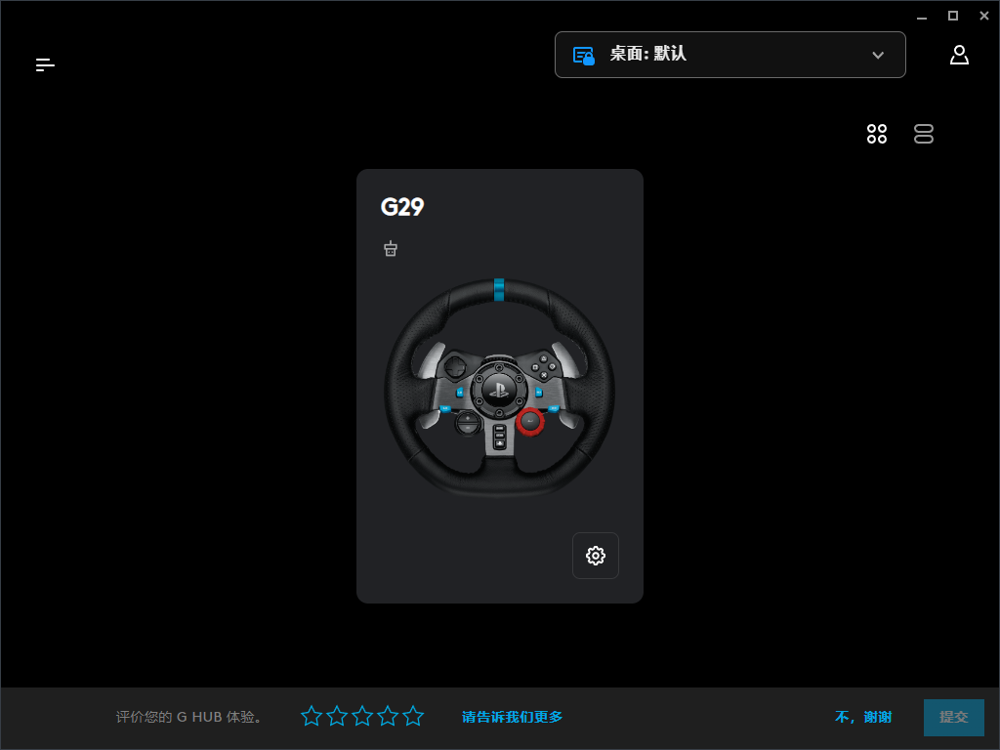
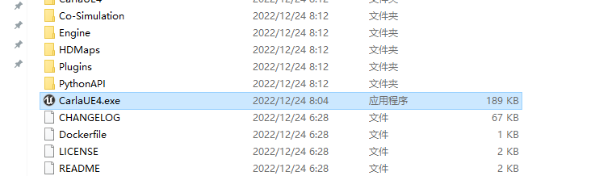
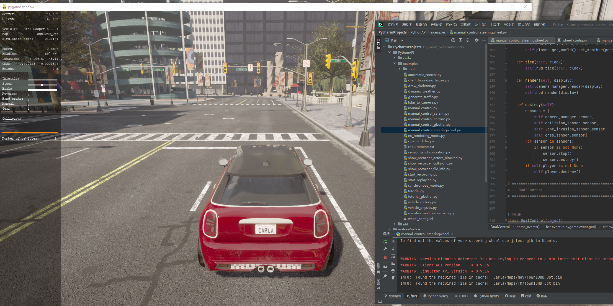

carla 与罗技 G29 方向盘的力反馈¶
ubuntu 环境下使用 jstest-gtk、ROS 进行方向盘控制参考链接 。
本教程在windows环境下联调，原先的想法是在windows环境下安装ros2，通过罗技的sdk来替换jstest-gtk，重写ros2节点来实现。罗技g29sdk可参考链接 。
但由于C++的g29 sdk强制要求界面，carla在控制方向盘时也要求指定 pygame 界面，G29python代码 用的C# dll修改，初始化过程不需要界面。同时由于是 python 写的，可以绕开ros2这个过程，减少非常多的学习量。
具体联调过程：
环境：python3.7、carla0.9.14、罗技G-hub驱动、G29方向盘。
首先去 罗技官网 安装方向盘驱动启动，安装好后驱动界面显示G29方向盘，同时方向盘转动自检。

python环境中安装 Carla 与logidrivepy
pip install carla
pip install logidrivepy
这里要创建一个ini的配置文件。
wheel_config.ini
[G29 Racing Wheel]
steering_wheel = 0
throttle = 2
brake = 3
reverse = 5
handbrake = 4
其中数字可能需要自己试这里steering_wheel表示方向盘方向、throttle表示油门和brake刹车已经是正确的设置了。要保证这个设置和.py文件在同一个目录下否则会报错。
下载carla-API后，运行carla服务端：

随后运行PythonAPI/examples/manual_control_steeringwheel.py文件。

此时即可开启车辆。
自动驾驶力反馈¶
另启一个文件，复制以下代码
import sys
import carla
sys.path.append('../logidrivepy')
from logidrivepy import LogitechController
import time
class SimpleController:
def __init__(self, k):
# k 是比例增益，用于调整控制器的响应速度
self.k = k
def control(self, aim, now):
# 计算位置差值
error = now - aim
# 计算输出力
force = self.k * error
return force
class ForceFeedback:
def __init__(self):
self.position = None
self.torque = None
class Node():
def __init__(self, client):
self.client = client
self.world = client.get_world()
self.actor = self.get_hero()
def get_hero(self):
for actor in self.world.get_actors():
if actor.attributes.get("role_name") in ["hero", "ego_vehicle"]:
return actor
def timer_cb(self):
out_msg = ForceFeedback()
steering_angle = self.actor.get_control().steer
out_msg.position = steering_angle
out_msg.torque = 0.8
def get_position(self):
steering_angle = self.actor.get_control().steer
position = steering_angle
return position
def main(args=None):
controller = LogitechController()
controller.steering_initialize()
print("\n---Logitech Spin Test---")
client = carla.Client("127.0.0.1", 2000)
client.set_timeout(2.0)
carla_car = Node(client)
# 创建一个PID控制器
sc = SimpleController(k=1)
# 在每个时间步中，更新控制器并使用新的力
while True:
aim = carla_car.get_position() * 150
now = (controller.LogiGetStateENGINES(0).contents.lX) / 327.50
if (abs(aim)<1):
controller.LogiPlaySoftstopForce(0,0)
controller.logi_update()
time.sleep(0.1)
controller.LogiStopSoftstopForce(0)
controller.logi_update()
print("Target: {}, Current State: {}".format(aim, now))
else:
force = sc.control(now, aim)
controller.LogiPlayConstantForce(0, -int(force)*2)
controller.logi_update()
print("Force: {}, Target: {}, Current State: {}".format(force, aim, now))
time.sleep(0.1)
controller.steering_shutdown()
if __name__ == "__main__":
main()
在pygame界面按键盘P开启自动驾驶，此时方向盘会随着车辆自行转动。
这个代码是测试用的效果不太好，有更好效果需求得换更好的控制代码了。